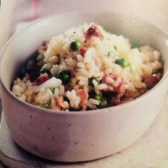

1 tbsp butter
1 tsp olive oil
1 finely chopped onion
2 smashed garlic cloves
1.5 cup arborio rice
4 cup of broth (from cube and water)
1lb of frozen green peas
1 oz grated parmesan
4 oz cooked ham
1 parsley clove
salt and pepper
Melt butter and olive oil in a saucepan and sauté onions and garlic. When the onion brown, add rice and stir.
Pour 1 cup of hot broth in the saucepan and keep cooking and stir. Keep doing that until there is no more broth. The rice must be creamy while still being al dente (should take 15 min).
Add the green peas and heat for another 3 to 5 min. Outside fire, add parmesan, ham and parsley. Salt and pepper and serve.